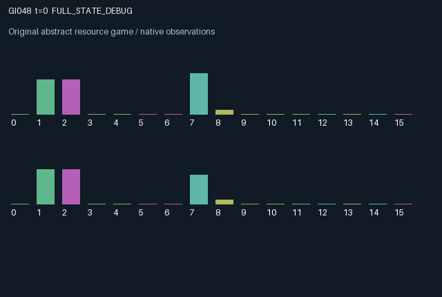

GI048 / LEGACY_ARRAY
astra-d2-00048 — Precommitted insurance with delayed peer monitoring
2 agents5 actions16 observation columns32 original horizonRuntime: PASS
Release verification episode
Untrained uniform legal actions. Actual JAX state sampled along the full original episode; full-state debug camera. No human performance or learning claim.

Run this game
crucibles play --game 48
Start Python locally, then open the address printed by the terminal. Installation, multiplayer, takeover and keyboard controls →
Objective, rewards & ending
Exact task contract
{
"termination": "Original kernel t >= 32; see mechanism and source"
}Declared per-step reward bounds: -1.0 to 1.0. Observability: source_defined.
Rules
Original mechanism document (historical status wording retained)
# astra-d2-00048 — Precommitted insurance with delayed peer monitoring This parentless source proposes a finite repeated risk-pooling interaction. It is related to generic mutual insurance and costly peer monitoring; no relation to an inspected benchmark or parent source is asserted, and structural uniqueness is not claimed. Each agent has renewable liquid capital and one three-step project slot. Actions are 0 wait, 1 launch when idle and sufficiently funded, 2 deposit into the common fund, 3 pay to monitor the other agent, and 4 liquidate one's own outstanding project. Unavailable economic operations are legal no-ops. A launch locks the current membership level as its coverage; later deposits cannot retroactively insure it. Membership decays. Liquidation recovers three quarters of principal. Success returns 1.3 times principal. An unsuccessful project can claim its precommitted covered amount, with simultaneous claims paid proportionally from the fund existing before that step's deposits. Project risk is private to its owner. Capital, project quantities and ages, the fund, coverage, membership and monitoring levels are public. Observations use columns 0..15 for time, own/other capital, own/other principal, own/other age, own risk, fund, own/other membership, own/other coverage, own/other monitoring and own current claim payment. Risk is drawn initially and refreshed after closing a project. Project success uses an explicit supplied random key. Paid monitoring reaches the partner's monitoring state for subsequent steps and decays; it lowers that partner's failure probability. Thus current monitoring cannot change a simultaneously settling project. Contributions likewise enter the fund after current claims settle. These delays make early assistance and insurance funding causally relevant. One agent's funded claims also reduce resources available for the other's future claims. Reward is tanh of three times realized project surplus, less liquidation losses, one tenth of fund contributions, and monitoring fees. This explicitly values pooled contributions with a small direct cost rather than treating every capital transfer as a realized project loss. The tanh bounds each reward in [-1,1]. Capital and pool caps discard excess balances; passive capital replenishment keeps feasible future participation possible. A free-rider incentive exists because peer monitoring helps the recipient and insurance funding can be used by either agent. Coverage is attached at launch to discourage purely retrospective deposits. Whether these incentives produce learning, cooperation, exploitability or degeneracy is untested. Horizon is 32 transitions with terminal state retained. This artifact makes no compiler, validator, mechanism-eligibility or effectiveness claim.
Commands
0Action 0; see mechanism and source
1Action 1; see mechanism and source
2Action 2; see mechanism and source
3Action 3; see mechanism and source
4Action 4; see mechanism and source
Roles & abilities
agent_0 Original legacy agent; see mechanism and source
agent_1 Original legacy agent; see mechanism and source
Observation permissions
Training receives only the original observation rows. Role cameras use declared visibility; debug cameras are explicitly marked. Local benchmark records log debug exposure and role takeover history.
Exact observation layout
[]
Entity visibility & attributes
[]
Actual verification & provenance
Per-game execution receipt
{
"game": "gi048",
"status": "PASS",
"verification_revision": 2,
"source_sha256": "5001220785cb30ce695d0ecb7b285eb78628ae06e9f54dbb2b7f2ef5dc28e33a",
"seed": 20261101,
"runtime": {
"jax": "0.4.38",
"numpy": "1.26.4",
"devices": [
"TFRT_CPU_0"
]
},
"dimensions": {
"num_agents": 2,
"observation_size": 16,
"num_actions": 5,
"max_steps": 32
},
"checks": {
"eager_reset": {
"status": "PASS",
"seconds": 0.387310266494751
},
"observation_spaces_legal_masks": {
"status": "PASS",
"seconds": 0.13550424575805664
},
"eager_step": {
"status": "PASS",
"seconds": 0.8755450248718262
},
"jit_reset": {
"status": "PASS",
"seconds": 0.16791319847106934
},
"jit_step": {
"status": "PASS",
"seconds": 0.46599793434143066
},
"eager_jit_integer_parity_float_measurement": {
"status": "PASS",
"seconds": 0.0005505084991455078
},
"jit_vmap_reset": {
"status": "PASS",
"seconds": 0.28119492530822754
},
"jit_vmap_step": {
"status": "PASS",
"seconds": 0.5513179302215576
},
"outer_autoreset_api": {
"status": "PASS",
"seconds": 0.6507093906402588
},
"full_original_horizon_episode_and_render": {
"status": "PASS",
"seconds": 1.6687572002410889
}
},
"human_scores": null,
"browser_controls": "PENDING",
"failures": [],
"elapsed_seconds": 5.587042331695557,
"float_parity_max_abs": 0.0,
"numerical_parity": "EXACT",
"raw_terminal_absorbing": "NOT_PART_OF_ORIGINAL_LEGACY_CONTRACT",
"terminal_outer_reset": "PASS",
"episode_steps": 32,
"scripted_random_returns": [
-0.49543319921940565,
-0.44465052150189877
],
"terminal": true,
"demo_information": "FULL_STATE_DEBUG",
"demo_frames": 33,
"render_roles_checked": 2
}Chromium control verification
{
"game": "gi048",
"status": "PASS",
"human_scores": null,
"engineering": true,
"checks": [
"catalog_selected_and_real_native_reset",
"dom_queue_and_native_step",
"second_participant_ownership_and_native_joint_step",
"all_roles_individually_controllable_no_role_cap",
"explicit_debug_camera",
"release_to_pure_ai_without_reset"
],
"seconds": 3.183525323867798
}Original identity and file hashes
{
"id": 48,
"key": "gi048",
"title": "astra-d2-00048 — Precommitted insurance with delayed peer monitoring",
"summary": "",
"tags": [],
"family": "legacy_array",
"dimensions": {
"num_agents": 2,
"observation_size": 16,
"num_actions": 5,
"max_steps": 32
},
"source_sha256": "5001220785cb30ce695d0ecb7b285eb78628ae06e9f54dbb2b7f2ef5dc28e33a",
"manifest_sha256": "b5ea25ccbd25ae400931cc8e7690a9ae2ef59a4db14b022cf5a9f73220c11b0c",
"files": [
{
"file": "candidate.py",
"sha256": "5001220785cb30ce695d0ecb7b285eb78628ae06e9f54dbb2b7f2ef5dc28e33a",
"bytes": 5683,
"origin": "work/exp_2/astra_generation/discovery_v2/initial/candidate_00048/attempt_00/candidate.py"
},
{
"file": "mechanism.md",
"sha256": "a7330739ace3ad642698debbe0c7aa349cc35c03d6c5ead7cff4e6b6fb8c065a",
"bytes": 2799,
"origin": "work/exp_2/astra_generation/discovery_v2/initial/candidate_00048/attempt_00/mechanism.md"
}
],
"original_status": "LEGACY_SOURCE",
"original_saved_replay": false,
"release_validation": "PASS",
"human_scores": null,
"browser_validation": "PASS"
}